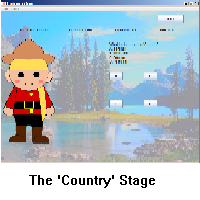

At each country, you must answer two multiple-choice questions. This is known as the Country Stage.
When you start the game, you will find yourself in Canada. On the right side of the screen, there will be a multiple-choice question, with four possible answers to the question, labeled A, B, C and D.
Answer the question to the best of your ability by clicking one of the four buttons. If you get a question wrong, the choice will be disabled, and ten points will be deducted from your score!
If you get the question right, another question will be displayed. Answer the same way you did the first question.
After you have answered both questions correctly, you will move onto the Map stage (see next page).
On the left side, there will be a picture of a person who is dressed in the style of the country you are in. He/she will give you a clue about the location of the Scarlet Gem, once you answer the questions correctly.
After you have completed all of the levels, you will find the Scarlet Gem in the next Country that you travel to.
